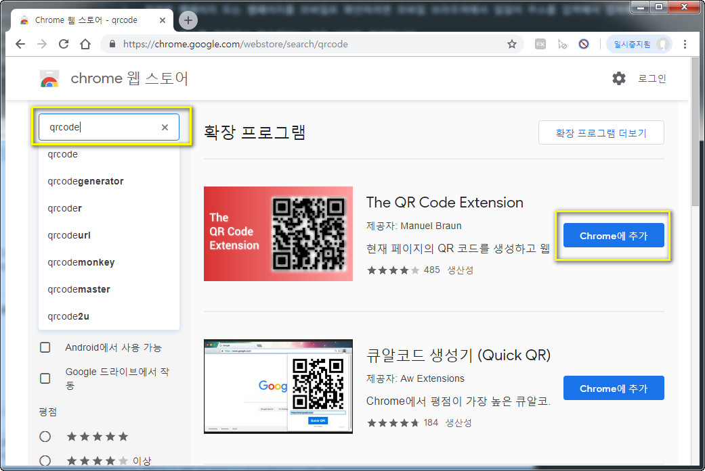
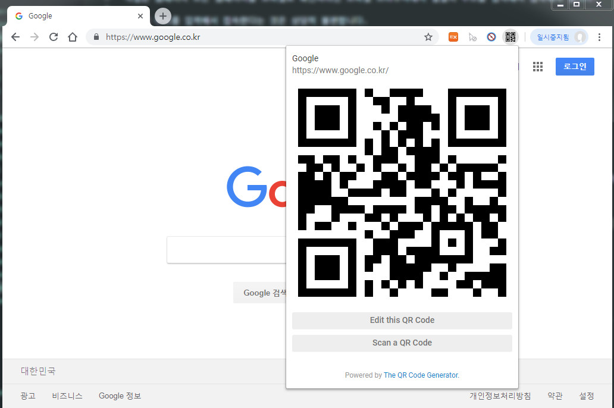

QR코드생성해서 보기
작업한 웹페이지 또는 웹페이지를 모바일로 확인하려면 모바일 브라우져에서 일일이 주소를 입력해서 접속해야 합니다.
이렇게 주소를 입력해서 접속한다는 것은 상당히 불편합니다.
크롬에서 해당웹페이지의 QR코드를 생성하고 접속하는 방법을 알아 보겠습니다.
확장기능 다운받기
크롬으로 웹스토어에 접속합니다.
접속하면 아래와 같은 화면이 나옵니다.

스토어검색에서 qrcode 를 검색하면 아래처럼 TR QR Code Extension 확장기능이 나옵니다. 크롬에 추가를 눌러 확장기능을 추가하세요

크롬에 추가되면 해당페이지에서 QR코드 확장프로그램을 누르면 아래처럼 해당페이지의 정보를 담은 QR코드를 생성해줍니다.

QR코드리더기나 네이버의 스마트렌즈 같은걸 눌러서 해당페이지를 방문하면 됩니다.
이러면 손쉽게 모바일로 해당 페이지를 쉽게 찾아갈수 있습니다.